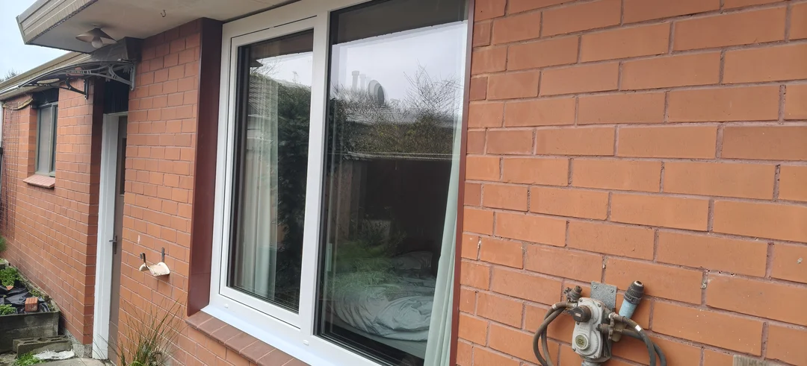
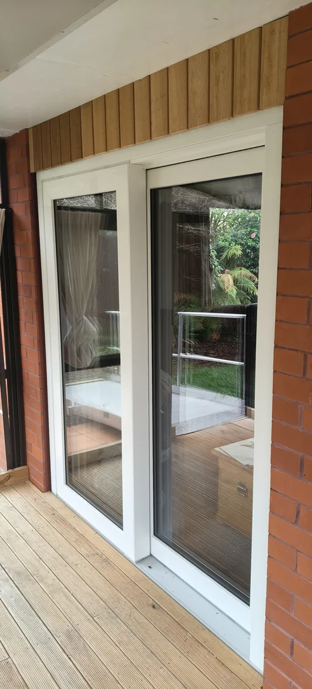
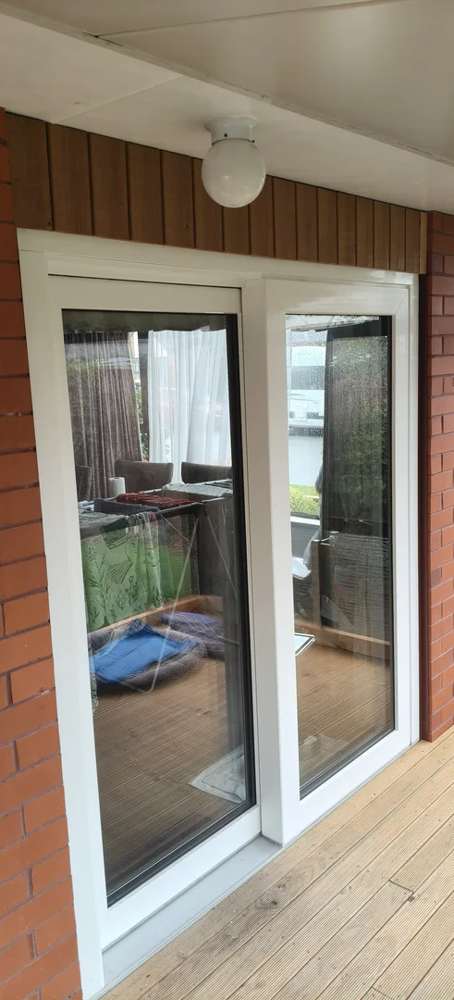
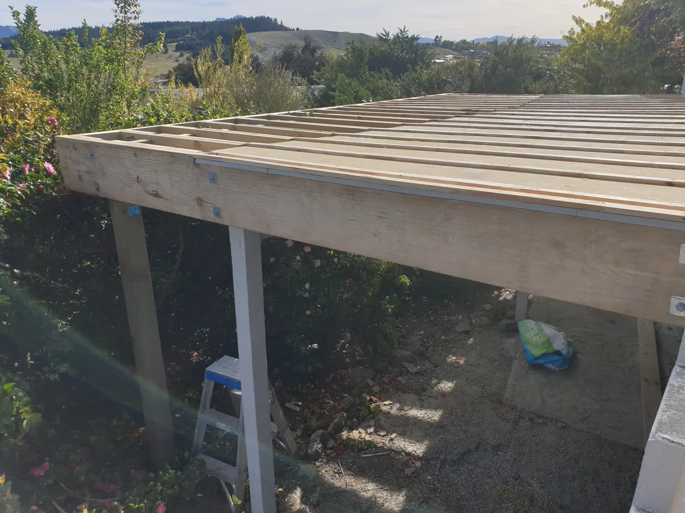
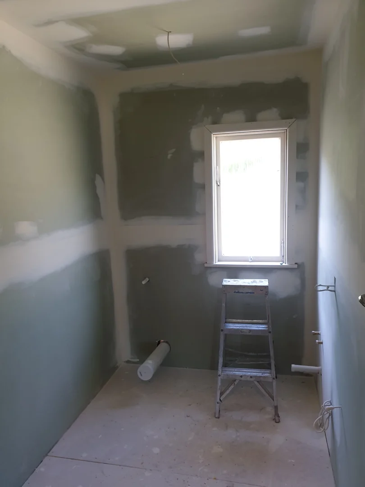
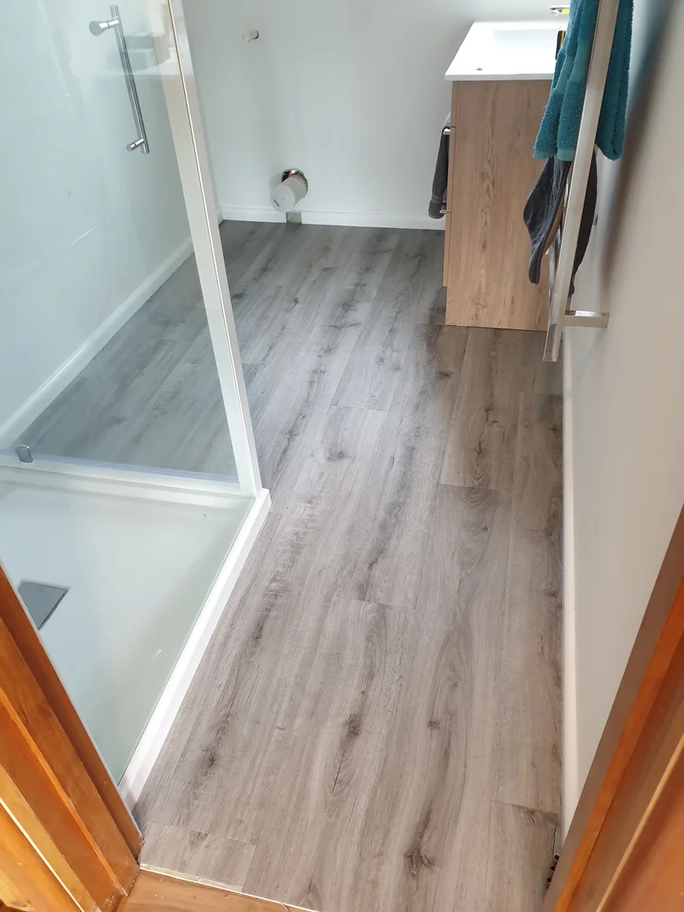
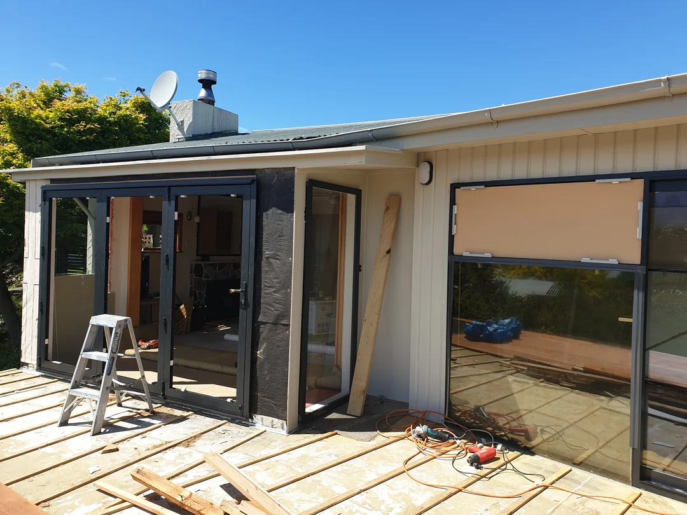
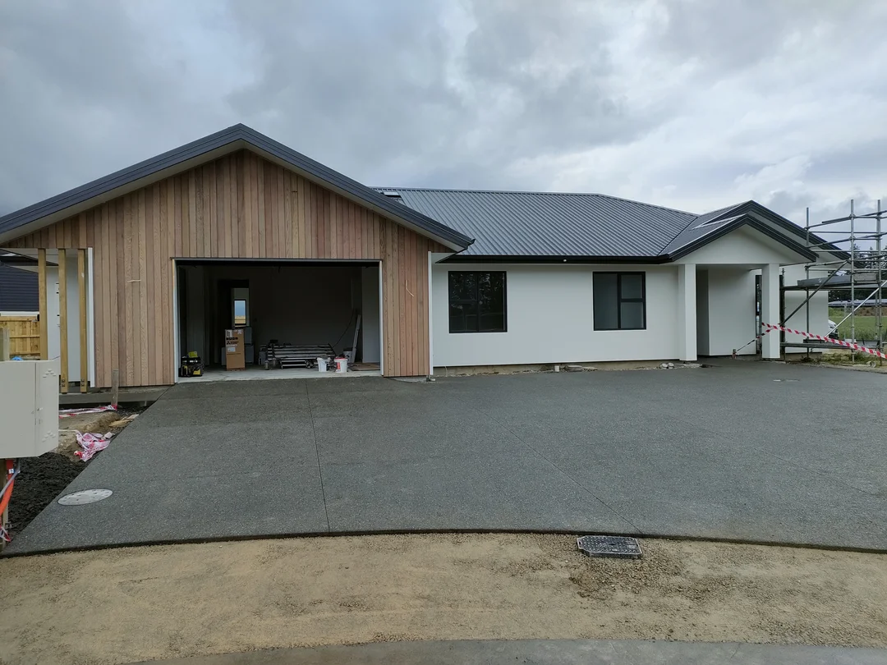

Builders who turn up, tidy up, and finish the job.
Renovations, alterations, additions and new homes across Christchurch and Canterbury, built to a clear quote and a timeline you can plan your life around.
Local builders covering the city and wider Canterbury — quick to site and easy to get hold of.
You get a written quote and a realistic timeline up front — then regular updates as the work goes on.
We treat your home like ours — clean as we go and we don't call it done until you're happy with it.
Our main areas of work are renovations, alterations and additions in the residential home sector. We also specialise in installing uPVC windows and doors, and carry out pre-purchase and pre-sale home inspections.
Kitchens, bathrooms, whole-house refits and re-clads — updating older Christchurch homes without the drama.
More room for a growing family — extra bedrooms, a second storey or a sleepout, tied neatly into the existing home.
We specialise in installing uPVC windows and doors, manufactured and imported from overseas, for clients across Canterbury.
Home inspections for buyers and sellers, with a written report and moisture testing results provided on completion.
Your plans brought to life — solid framing, weathertight finishing and a build managed start to finish.
Decks, pergolas and fencing built to handle the Canterbury weather and made for getting outside.
Rot, leaks, rotten weatherboards or the jobs on the list you never get to — sorted by one reliable crew.
Shop, office and small commercial work scheduled around your trading so you can keep the doors open.
A few of the renovations, uPVC window and door installs and new homes we've completed over the years.
We specialise in the installation of uPVC windows and doors, manufactured and imported from overseas, for clients across Canterbury.
Ask about uPVC windows and doors


A large deck extension and home renovation in Wanaka, from framing up the new deck through to a finished bathroom.





Corcoran Construction is a small Christchurch building company run by Matt Corcoran. Our main areas of work are renovations, alterations and additions in the residential home sector, along with uPVC window and door installations and pre-purchase and pre-sale home inspections across Canterbury.
Matt began his building career on the Kapiti Coast in 1999, completing an adult apprenticeship in 2002 and working for Cox and Sweetman Builders for ten years. He then went into business for himself, contracting to builders around the Wellington region. Matt has been a Licensed Building Practitioner (LBP) for the past 23 years.
He returned to Christchurch a couple of weeks after the February earthquakes and took part in the rebuild of both commercial and residential properties, before building his own small company specialising in these areas of work.
You deal with the same people from quote to handover. That means fewer crossed wires, honest advice when something needs rethinking, and a finished result you'd happily point friends and family toward.
A small, hands-on crew — so the person who quotes your job is the person who sees it through.
A Licensed Building Practitioner (LBP) building since 1999. Matt runs every project and is your main point of contact from first quote to final walk-through.
Keeps the build moving and the site tidy, coordinating trades so milestones land when they should.
An extra set of capable hands keeping the job ticking along and the finishing details right.
Roles shown reflect a typical crew. Team detail confirmed at quote.
A few words from clients we've worked with.
"Matt undertook a large renovation and deck extension of our property in Wanaka. His professional approach to the project was great and offered good solutions in order to achieve what we wanted. The project was completed on time and to budget and has allowed us to enjoy our time there so much more."
"Corcoran Construction Ltd completed a major renovation of our home in Redcliffs, Christchurch. We were looking for a building company we could work alongside as we wanted to have a part in the work ourselves and they were recommended by one of the suppliers we had spoken to. We were impressed with his professional approach both in the initial consultation where we outlined our plans through to the completed project including the installation of new uPVC windows and doors. Matt took care of the project management for the job and his team of subcontractors were also very professional, friendly and easy to get along with."
It takes thirty seconds and it helps other Christchurch homeowners find a builder they can trust.
Leave a Google reviewTell us what you're planning and we'll come back with honest advice and a clear quote. No pressure, no jargon.